Новости
03.05.2007
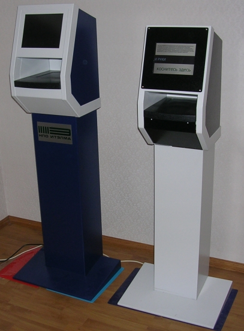
23.04.2007
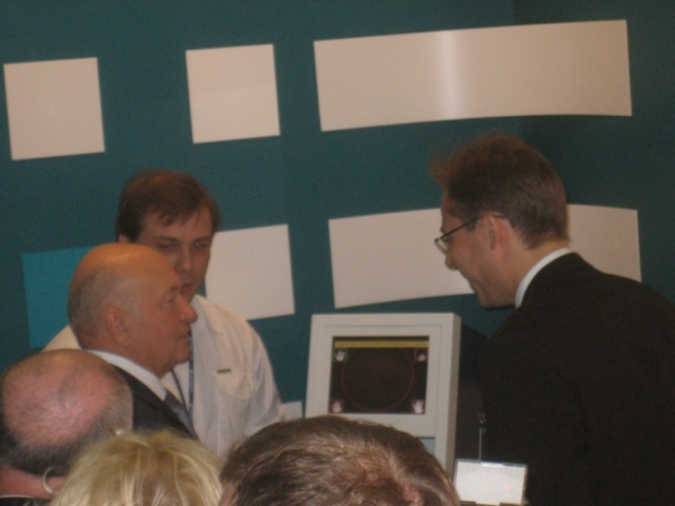
Коллектив разработчиков выражает признательность руководству НПО "ИТЭЛМА" за предоставленную возможность анонсирования своей разработки (системы HANDSCAN) для широкого круга потенциальных потребителей в рамках прошедшей выставки "Высокие технолoгии", а также заявляет о своей готовности вести дальнейшую совместную деятельность по проекту HANDSCAN с НПО "ИТЭЛМА".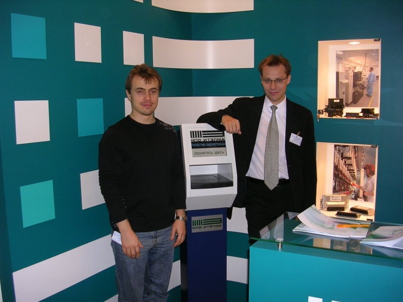
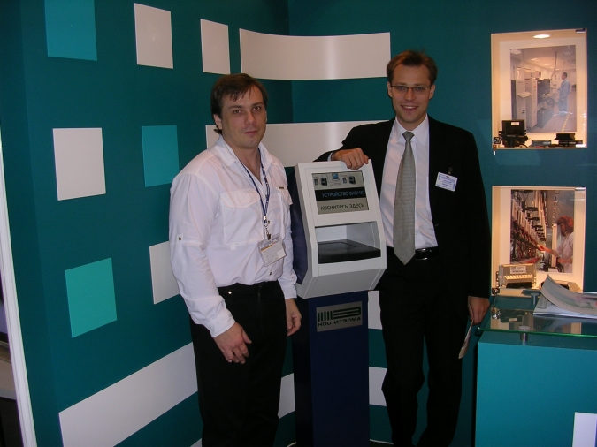
22.04.2007
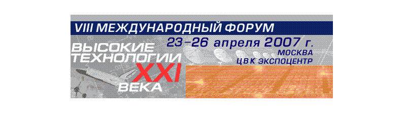
21.04.2007
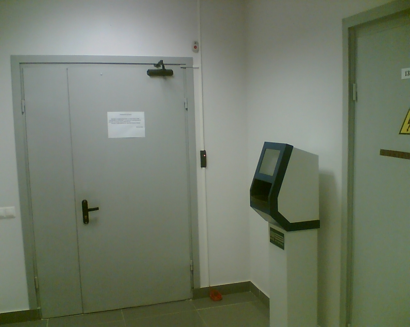
20.04.2007
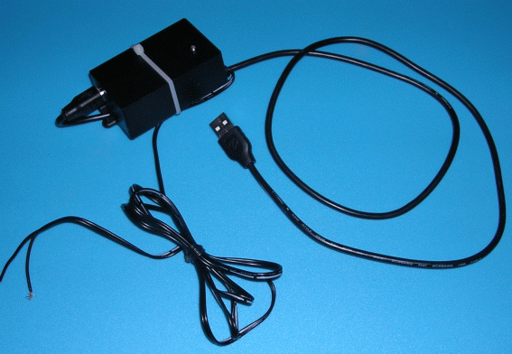
10.04.2007
07.04.2007
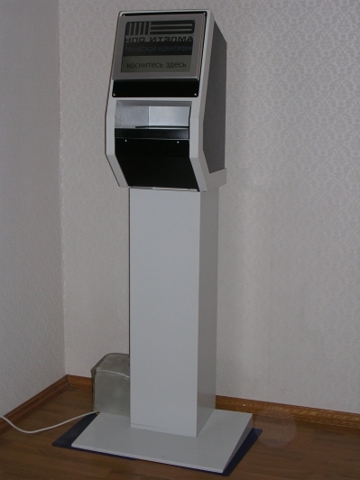
03.04.2007
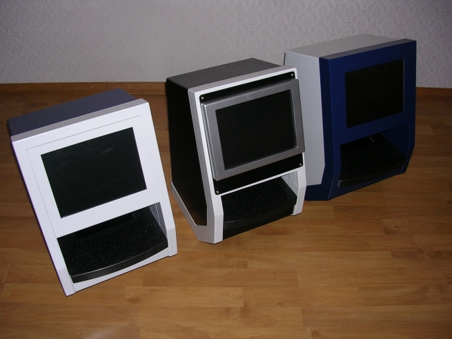
30.03.2007
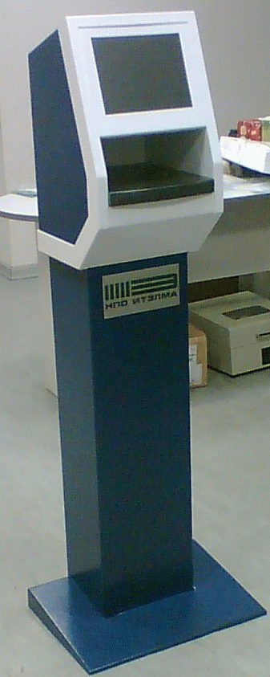
25.03.2007
23.03.2007
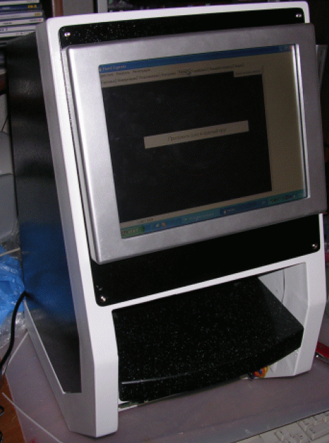
18.03.2007

13.03.2007
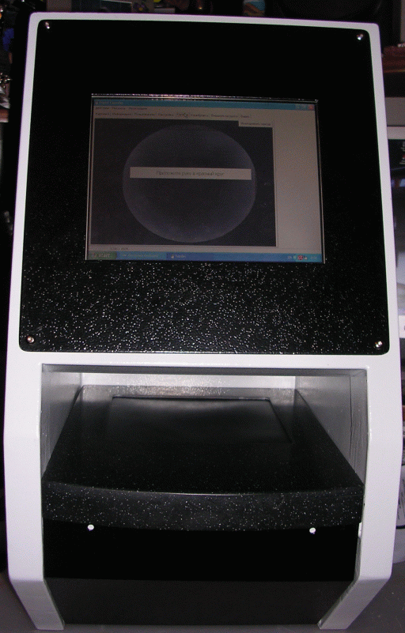
Одновременно начата сборка промышленного образца устройства биометрической идентификации "Handscan" второго поколения (без большой линзовой системы).
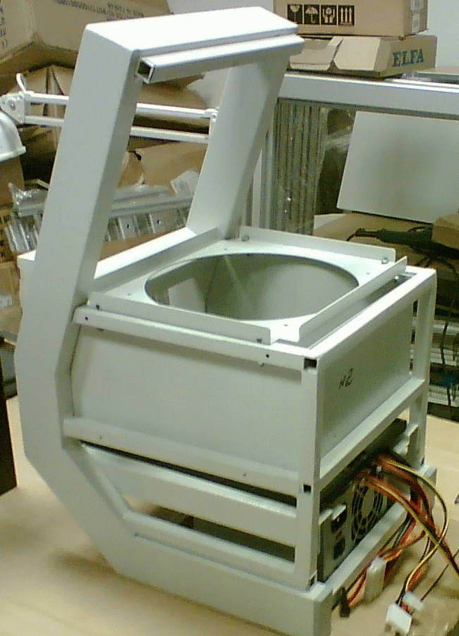
19.02.2007
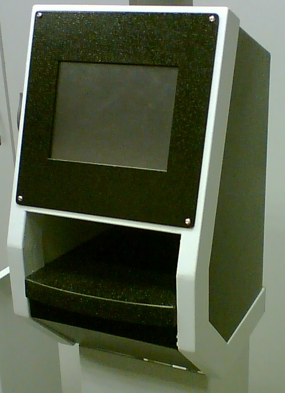
11.02.2007
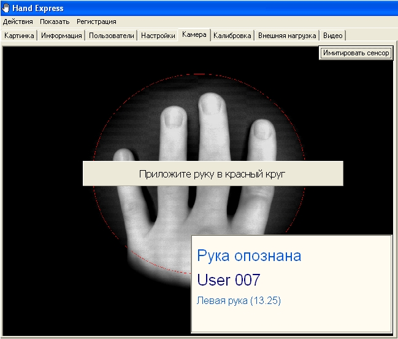
На фото ниже - действующий макет безлинзового аппарата "Handscan".
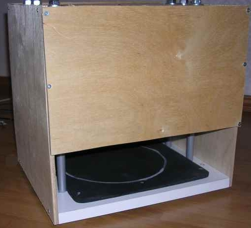
01.02.2007
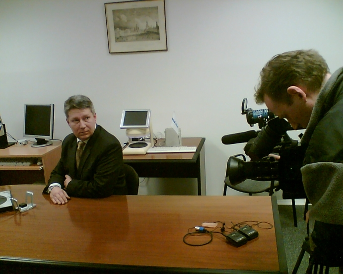
22.01.2007
- Авторами и разработчиками проекта биометрической идентификации "Handscan" являются организаторы сайта - Демин А. и Демин Е.
- Полный пакет документации находится у вышеуказанных лиц.
- В данном пакете содержится вся информация об алгоритме получения первичных данных, их дальнейшей обработке, составлении модели кисти руки, ее хранениии и, что самое главное, методе идентификации личности.
- Все вопросы,касающиеся электронной части проекта также находятся в компетенции разработчиков:
- выбор компьютерного ядра
- возможные замены типов оптики
- электронные схемы и программы прошивок микроконтроллерных узлов
- документация по изготовлению плат для уникальных узлов (напр. датчик руки)
- Возможность полной поддержки и сервиса уже готовых решений и их модификация по желанию заказчика. При этом обеспечивается адаптация системы для работы с различными типами баз данных.
20.01.2007
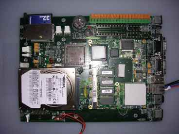
решено сменить на моноплатные компьютеры стандарта PC-104 (см.фото ниже), ввиду их меньших габаритов и стоимости.
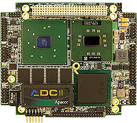
18.01.2007
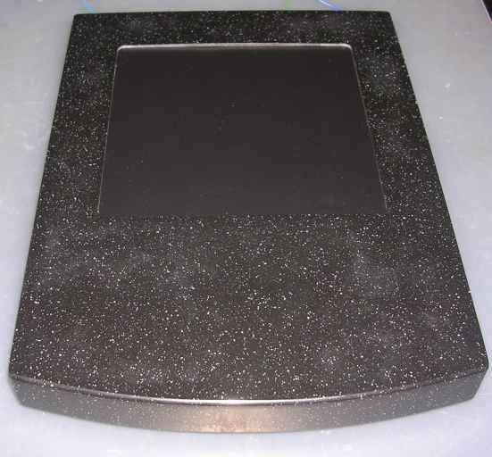
12.01.2007
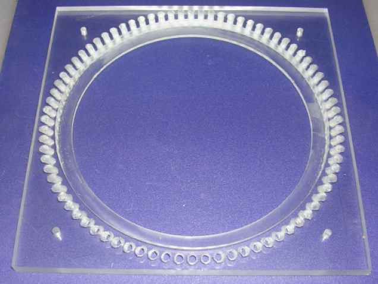
09.01.2007
07.01.2007
29.12.2006
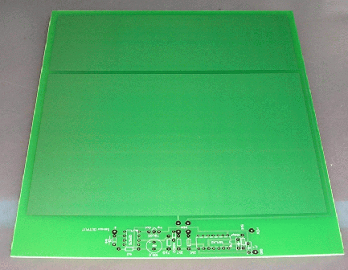
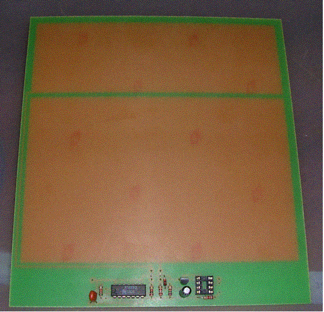
24.12.2006
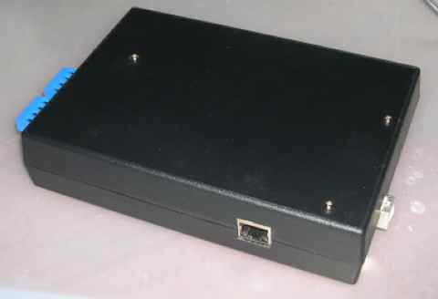
23.12.2006
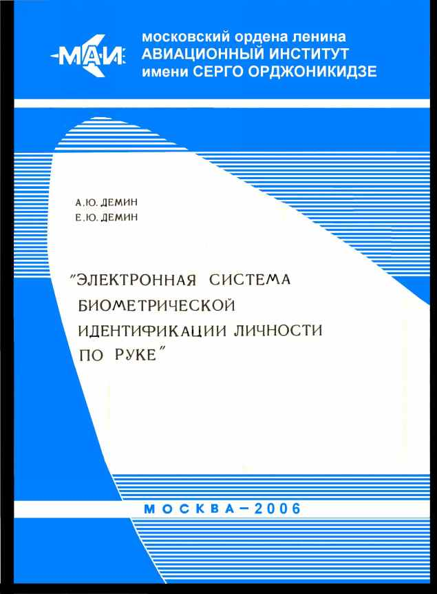
12.11.2006
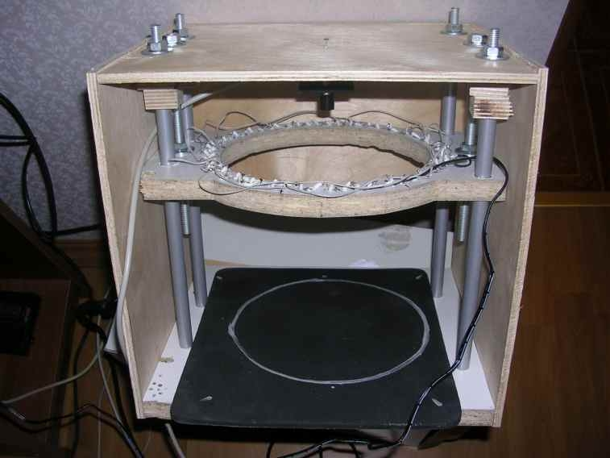
08.09.2006
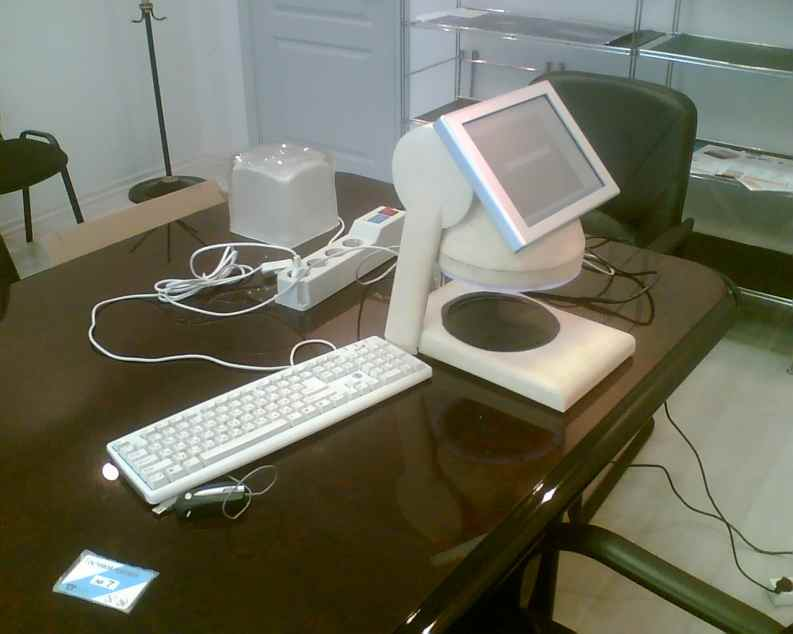